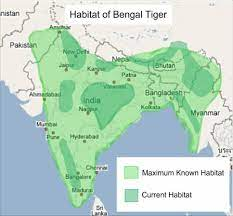

In 1982, a sub-fossil right middle phalanx was found in a prehistoric midden near Kuruwita in Sri Lanka, which is dated to about 16,500 ybp and tentatively considered to be of a tiger. Tigers appear to have arrived in Sri Lanka during a pluvial period, during which sea levels were depressed, evidently prior to the last glacial maximum about 20,000 years ago.[34] The tiger probably arrived too late in southern India to colonise Sri Lanka, which earlier had been connected to India by a land bridge.[14]
Results of a phylogeographic study using 134 samples from tigers across the global range suggest that the historical northeastern distribution limit of the Bengal tiger is the region in the Chittagong Hills and Brahmaputra River basin, bordering the historical range of the Indochinese tiger.[9][35] In the Indian subcontinent, tigers inhabit tropical moist evergreen forests, tropical dry forests, tropical and subtropical moist deciduous forests, mangroves, subtropical and temperate upland forests, and alluvial grasslands. Latter habitat once covered a huge swath of grassland, riverine and moist semi-deciduous forests along the major river system of the Gangetic and Brahmaputra plains, but has now been largely converted to agricultural land or severely degraded. Today, the best examples of this habitat type are limited to a few blocks at the base of the outer foothills of the Himalayas including the Tiger Conservation Units (TCUs) Rajaji-Corbett, Bardia-Banke, and the transboundary TCUs Chitwan-Parsa-Valmiki, Dudhwa-Kailali and Shuklaphanta-Kishanpur. Tiger densities in these TCUs are high, in part because of the extraordinary biomass of ungulate prey.[36]
The tigers in the Sundarbans in India and Bangladesh are the only ones in the world inhabiting mangrove forests.[37] The population in the Indian Sundarbans was estimated as 86-90 individuals in 2018.[5] |
 |